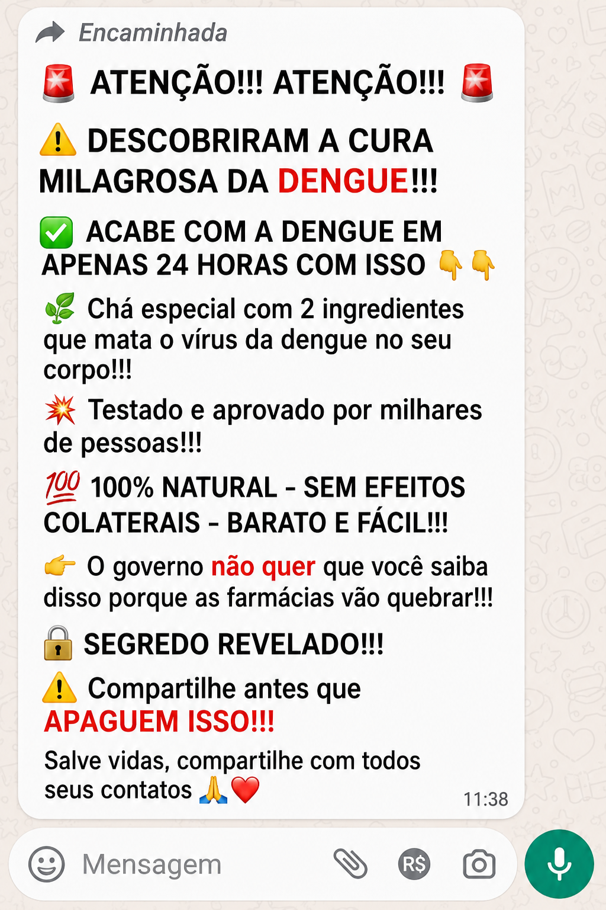

Anote este código para continuar de onde parou:
💡 O código fica salvo neste computador.
Use-o ao voltar para retomar do mesmo ponto.
Você está sendo convidado(a) a participar de uma pesquisa realizada pela Universidad Carlos III de Madrid (Espanha), em parceria com instituições de pesquisa e educação, sobre como os jovens utilizam a mídia e processam informações sobre diferentes temas.
A coleta de dados será realizada pela empresa de pesquisa Conectar Pesquisas.
A participação nesta pesquisa é voluntária. Antes de decidir, leia atentamente as informações abaixo.
Todas as respostas serão tratadas de forma estritamente confidencial e utilizadas exclusivamente para fins de pesquisa científica.
Seu professor, sua escola e outras pessoas não terão acesso às suas respostas individuais. Os resultados poderão ser apresentados apenas de forma agregada, sem permitir a identificação dos participantes.
Sua participação é totalmente voluntária. Você pode interromper o questionário ou retirar seu consentimento a qualquer momento, sem necessidade de justificar sua decisão e sem qualquer prejuízo para você.
| Veículo | (b) Usou no último mês? | (c) Confiável? |
|---|
| Manchete | Sim | Talvez | Não |
|---|---|---|---|
| Mulher com 22 filhos recebe R$ 15 mil de Bolsa Família | |||
| Ypê anunciou recorde de vendas após suspensão da Anvisa | |||
| Receita Federal ampliou a fiscalização e vai monitorar cada PIX e pagamentos por aproximação | |||
| O técnico do Brasil, Carlo Ancelotti, recebeu propina para perder a Copa do Mundo |

| Grupo | Nunca | Uma ou duas vezes durante o período das aulas | Algumas vezes durante o período das aulas | Após cada aula |
|---|---|---|---|---|
| Familiares ou pessoas que moram com você | ||||
| Colegas da mesma escola, mas de outra classe | ||||
| Amigos de fora da escola | ||||
| Colegas da mesma classe |
| Afirmação | Nunca | Uma vez na semana | Entre 2 e 3 dias na semana | Entre 4 e 5 dias na semana | Praticamente todos os dias da semana |
|---|---|---|---|---|---|
| Li posts ou assisti vídeos, podcasts ou lives que davam dicas sobre como ser homem numa sociedade que quer acabar com a masculinidade. | |||||
| Li posts ou assisti vídeos, podcasts ou lives que falavam sobre empoderamento feminino e igualdade de gênero. |